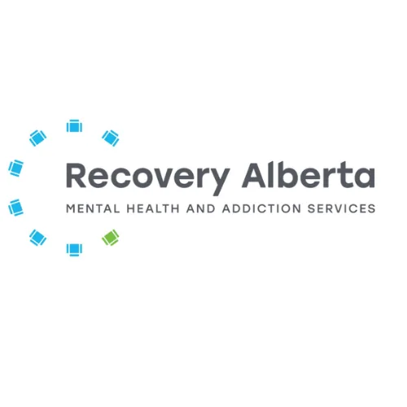

This page exists for one reason: to help you access publicly funded addiction and mental health care in Alberta without spending your last reserves guessing your way through the system.
Alberta's system has recently shifted. While many people still recognize Alberta Health Services (AHS), mental health and addiction care is now largely delivered through Recovery Alberta. From the outside, that change can feel unclear — and that's exactly where people lose momentum at the worst possible moment.
The names may change. The real challenge hasn't: knowing where to start, who to call, and how to get properly routed.
This page is built to remove that friction. Rather than pointing you at specific buildings or program lists that go out of date, it directs you to the actual intake and triage points — the front doors that connect you to the right care, regardless of what the system is called behind them.
This isn’t a complete list of programs — it’s a guide to the correct entry points that connect you to them.

Why this page uses phone numbers: It's intentional. Programs, locations, hours, and intake rules change. Access points change far less often — and they’re what actually route you into care. Calling an intake line doesn't just give you information — it starts a documented assessment process, routes you to the right level of care, and gives you instructions that match your situation, location, and urgency. A Google search gives you a building. A phone call gets you in the system.
If you have a family doctor, start there when you can. It may be uncomfortable to say what's really happening out loud — but medically, they often know you better than anyone else in the system. They can guide you toward appropriate care, make referrals when needed, and provide documentation (medical leave notes, for example) to help protect you while you stabilize.
If you have benefits, use them. Most counselling or psychology services through benefits don't require a referral, and that support can matter. But if you're in acute distress, unstable, or unsure about safety, public access points (AHS / Recovery Alberta) are still the correct place to start — they exist for exactly those moments.
Many workplace benefit plans include telephone counselling (usually a 1-800 number on your benefits card). These can be useful for general support — but they're typically national services, not Alberta-specific. That means they're often less helpful for navigating local care pathways and tend toward short-term support rather than in-depth assessment or psychiatric care. If your goal is getting into the Alberta system at the right level of care, intake lines remain the most direct route.
Quick start: pick the closest match — this will jump you to the right section below.
If you're unsure where to start, choose the closest match below — AHS staff will help route you to the right next step.
Note: Some AHS intake numbers vary by region. If you're unsure which applies to you, starting with the province-wide Addiction Helpline or Distress Line will route you correctly based on location and need.
Before you call (30 seconds):
One more thing: it's okay if this is the first time you've said some of this out loud. Many people carry a double life for years before making this call. You don't need to explain everything perfectly — just start where you are.
Use this pathway if there is immediate risk to life or safety. This includes risk of self-harm, overdose, severe intoxication or withdrawal, psychosis, or inability to stay safe.
What to do:
Call 911 and clearly state: "This is a mental health and/or substance use crisis."
Not sure if it's a 911 situation? In Canada and the United States, you can call or text 988 any time, day or night, to reach a trained crisis responder. In Alberta, the Edmonton Distress Line is 780-482-HELP (4357), and 211 can connect you to local mental health and addiction supports. Visit our Crisis Resources page for more options.
A common fear: Many people hesitate to call 911 because drugs are present or illegal activity has occurred — worried that they or others could face consequences.
When you call for a medical or mental health crisis, the priority is safety and care, not punishment. Emergency responders focus on stabilizing the person at risk and connecting them to AHS medical services. Don't let fear of legal consequences cost someone their life.
Calling 911 in a crisis is not a moral failure or an overreaction. It is the fastest way to activate urgent AHS care when safety is uncertain.
Use this pathway for psychiatric concerns that are serious but not immediately life-threatening. This includes worsening mental health symptoms, medication concerns, functional decline, or the need for psychiatric assessment.
Correct Recovery Alberta access point:
Mental Health Helpline
📞 1-877-303-2642 (24/7)
This call starts the official Recovery Alberta intake and assessment process. Staff determine urgency and provide exact next steps. No family doctor referral required.
Unsure what to say? Start here:
"I'm calling to start a Recovery Alberta intake. My concern is [brief symptom / issue]. It's not an emergency, but it's significantly affecting my [work / sleep / safety]. I'm looking for assessment and next steps, including psychiatric evaluation if appropriate."
A note from experience:
I've been on this call. And I minimized — out of shame, out of habit, out of not wanting to be seen as clearly as I actually was. It cost me. The care you receive is proportionate to what you disclose. They can't treat what they don't know. Once there's a real person on the line, resist the instinct to soften it. Honesty isn't vulnerability here — it's leverage.
Use this pathway when the primary concern is alcohol or drug use — whether someone is actively using, relapsing, newly sober, or worried about losing control.
Correct AHS access point:
AHS Addiction Helpline
📞 1-866-332-2322 (24/7)
This service triages addiction-related concerns and connects people to appropriate AHS addiction and medical supports. The call is documented for continuity of care.
If mental health and substance use are both present, this is a concurrent disorder within AHS. When speaking to staff, say clearly: "This is a concurrent mental health and substance use concern." This language helps ensure proper routing and reduces the risk of being bounced between services.
You can start with either AHS Access Mental Health or the AHS Addiction Helpline — both can initiate intake and route appropriately when concerns overlap. When mental health and substance use are tightly intertwined, I generally suggest starting with Access Mental Health — their intake more naturally accommodates psychiatric assessment and can still loop in addiction services as needed.
If your substance use feels secondary to trauma, anxiety, or another mental health concern — say so. AHS staff are trained to assess how these issues interact, not to force them into separate boxes. You don't need to figure out which came first. Intake will help sort that out with you. If you want to understand why that relationship is so common before you call, the research behind it is worth reading.
What to say (either number):
"I'm calling because I'm dealing with both mental health and substance use concerns. I'm not sure which is driving things more right now, but together they're affecting my functioning and safety. I'm looking for assessment and next steps."
Use this pathway when distress is high but there is no immediate danger. This includes emotional crisis, escalating symptoms, or uncertainty about what level of care is needed.
Correct AHS access point:
AHS Distress Line
📞 1-877-303-2642 (24/7)
Note: This line also connects to Alberta's Mental Health Helpline services depending on your needs.
This service provides immediate support, helps assess risk, and advises on urgent versus scheduled AHS care. If you're unsure which number fits your situation, Health Link 811 is also available 24/7 and can direct you to the appropriate AHS service — though the access points above are typically the faster route for mental health and addiction concerns.
Outside Alberta? In Canada and the United States, call or text 988 any time to reach a trained crisis responder.
If you call the wrong number, you haven't failed — redirection is part of the process.
If you're supporting someone who is overwhelmed, in denial, or unable to initiate care themselves, you can contact AHS access points on their behalf. You do not need formal consent to share concern-based information. AHS staff can advise on next steps and how to encourage engagement safely.
This is one of the harder positions to be in. You can see what's happening clearly. They may not — or may not be ready to act on it. The gap between those two realities is where a lot of people calling on someone else's behalf are sitting.
Common fears — and what's actually true:
What to say when calling on someone's behalf:
"I'm calling about someone I'm concerned about. They haven't made this call themselves — I'm reaching out because I'm worried about their safety and I'm not sure what the right next step is. Can you advise me on what I can do from here?"
If the situation is immediately dangerous — active overdose, self-harm, psychosis, or inability to keep themselves safe — don't navigate the intake system. Call 911 and state clearly that it's a mental health and/or substance use emergency.
If you're supporting someone long-term and finding it unsustainable, AHS also provides support and guidance for family members and caregivers. You are allowed to ask for help for yourself — not just for them.
Reaching out rarely happens in one clean step. After your first call you may be triaged rather than booked immediately — placed on a callback list, directed to a next step, or asked to check back in. That isn't dismissal. That's how intake works. It happens in stages. Generally speaking, expect some form of action within a day to a week — most often an in-person intake, where you meet face-to-face with an AHS clinician to clarify your specific needs and get properly routed.
If nothing seems to happen, or your situation changes, call again. This isn't being difficult — it's how the system works. Persistence is often part of access, especially when symptoms fluctuate or worsen. When in doubt, call. Write things down ahead of time if it helps. Ask staff to slow down. Ask them to hold while you take notes. These are trained professionals who support people in exactly these moments, regularly.
Some AHS services involve wait times. That's frustrating — especially when you're already stretched thin. There are structural reasons the system works this way, and understanding them won't fix the wait, but it does make it less personal. Starting intake early gives you more options, not fewer.
Be as honest as you can with intake staff — even when it's uncomfortable. Their job isn't to judge or punish. It's to understand risk and connect you to the right level of care. Downplaying symptoms or substance use leads to under-triage, not faster help.
Having thoughts of self-harm? Say it.
Concerned for your safety — from yourself or others? Say it.
Feeling severely unstable or unpredictable? Say it.
And if things escalate or become unbearable between now and your next step, the Recovery Alberta Mental Health Helpline — 1-877-303-2642 — is available 24/7. It operates separately from intake services and is there for exactly that window.
If this feels overwhelming, that doesn't mean you're doing it wrong. It means you're doing something hard — and important.
You don't need the right words. You don't need to know which service fits best. You don't need to get it right on the first try. Starting is the hardest part. And if you're reading this, you've already started. When you're ready to understand what you're actually dealing with, this is where to go next.
Need more specific support?